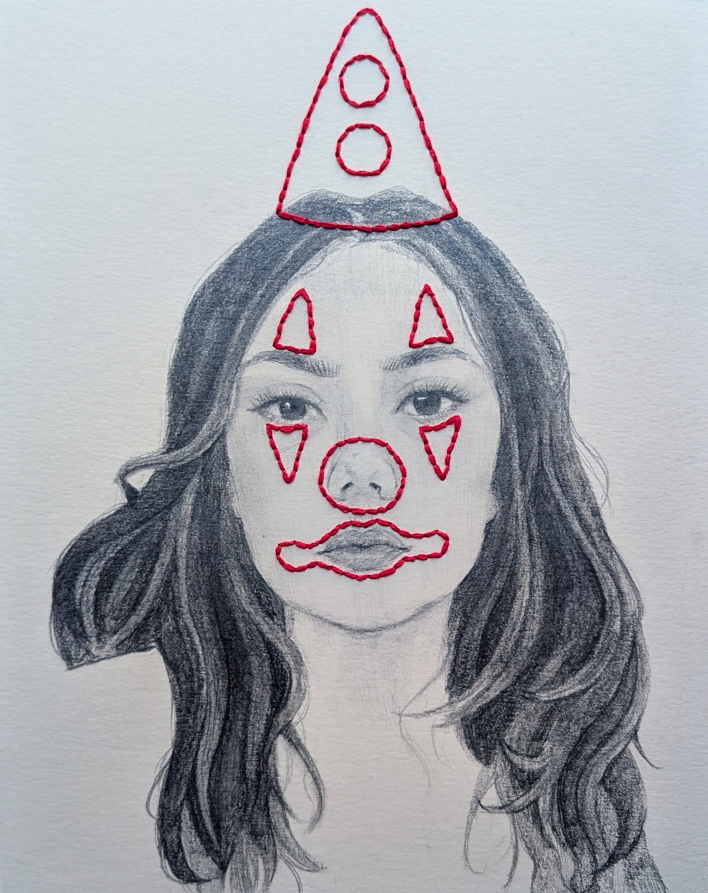

About Me

Hi! I’m a traditional illustrator and painter with a passion for breathing new life into objects and ideas through art. My work centers around transforming musical instruments into one-of-a-kind, hand-painted pieces — from guitars to drumheads — each carrying its own personality and story.
In addition to custom instrument art, I love working in watercolor and ink to create expressive portraits and illustrations. I’ve also collaborated with musicians and bands to design merchandise and visual branding that speaks to their sound. I'm always open to new ideas and creative challenges — if you have a project in mind, I'd love to hear from you!